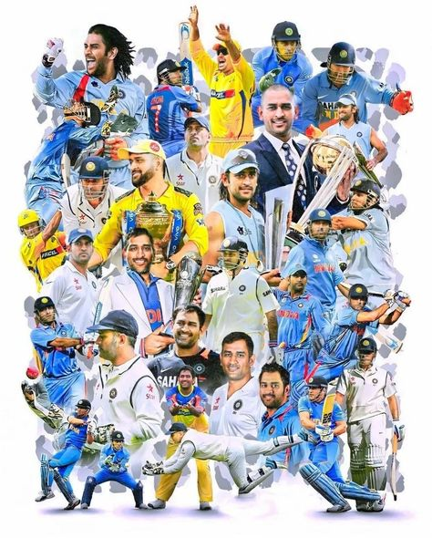
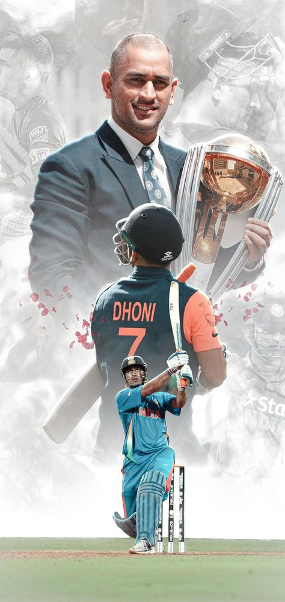

Mahendra Singh Dhoni
The Captain Cool
MS Dhoni's Journey
Early life
Dhoni was born in Ranchi, Bihar and hails from a Hindu Rajput family to parents from Uttarakhand. He is the youngest of three children of Pan Singh and Devaki Devi.His parents moved from Uttarakhand to Ranchi, Jharkhand where his father worked as a pump operator in junior management position in MECON Colony situated in Doranda area in Ranchi.
International career
The Indian ODI team in the early 2000s saw Rahul Dravid as the wicket-keeper to ensure that the wicket-keeper spot didn't lack in batting talent. The team also saw the entry of wicket-keeper/batsmen from the junior ranks, with talents like Parthiv Patel and Dinesh Karthik (both India U-19 captains) named in the Test squads. With Dhoni making a mark in the India A squad, he was picked in the ODI squad for the Bangladesh tour in 2004/05. Dhoni did not have a great start to his ODI career, getting run out for a duck on debut. In spite of an average series against Bangladesh, Dhoni was picked for the Pakistan ODI series.
Retirement from international cricket
Dhoni announced his retirement from international cricket on 15 August 2020. The decision came as a surprise to many fans and cricket experts, as Dhoni had not announced any plans to retire before that. He had not played any international cricket since India's loss in the 2019 Cricket World Cup semi-final. He also had not announced any plans to retire from domestic cricket, and continues to play for the Chennai Super Kings in the Indian Premier League.
Domestic career
He debuted in first class and List A Cricket in the season of 1999-2000. In domestic cricket circuit he played for the teams such as Bihar, Jharkhand, India A, Air India Blue, Indian Board President's XI, Rajasthan Cricket Association President's XI, East Zone, Rest of India, East zone under 19, Chennai Super Kings, Rising Pune Supergiant. In BCCI Corporate trophy he played for Indian government owned Air India airlines's Air India team until his resignation from the company in 2013. In 2009, BCCI Corporate trophy Dhoni scored 106 runs playing for Air India Blue team against 'India Revenue' team. In the inning he hit 7 sixes and 7 fours at Chandigarh.
Indian Premier League
Dhoni was contracted by the Chennai Super Kings (CSK) for US$1.5 million. This made him the most expensive player in the IPL for the first season auctions. Under his captaincy, CSK won the 2010, 2011, 2018, 2021 and the 2023 Indian Premier League titles and the 2010 and 2014 Champions League T20 titles and ended up as a runner-up in 2008, 2012, 2013, 2015 and 2019 IPL league seasons. MS Dhoni became the first player to play 200 T20 matches for Super Kings. Dhoni is at the top of the list of most matches played in the Indian Premier League. Dhoni is also one of the three captains to have won the Indian Premier League twice, with CSK. Dhoni is the only captain in the IPL to win more than 100 matches. He is also the most successful wicket-keeper with 180 dismissals as of IPL 2023. In 2015, the Chennai Super Kings got banned from the IPL for 2 years by R.M. Lodha from the committee of Supreme Court of India. They were banned due to the illegal betting of one of their officials, Gurunath Meiyappan. He was arrested with charges of spot-fixing According to Dhoni, it was darkest period of his career. He said "The biggest crime that I can commit is not a murder, it is actually match-fixing". In 2016, Rising Pune Supergiant (RPS), a debuting IPL franchise team made him captain but after the poor performance of the team in that season they removed Dhoni from the captain's position and chose Steve Smith, then Australian national team captain, for the post. Dhoni played as wicketkeeper batsman in the 2017 season for RPS. In the 2018 IPL season, CSK returned to IPL, and he was again appointed to lead the franchise by the franchise. Dhoni scored 455 runs in that season and led his side to their third IPL title.In the 2020 & 2021 seasons of the IPL, Dhoni failed to perform where he scored 200 runs in 14 innings in 2020 and 116 runs in 16 innings with an average of 15.29 in the 2021 IPL season. He led the franchise to the 4th title in 2021 Indian Premier League season. Dhoni got retained by CSK for ₹12 Cr, before IPL 2022 player's auction.[148] He stepped down from captaincy on 24 March 2022, where Ravindra Jadeja became the new captain. However, on 30 April 2022, Jadeja handed over the captaincy back to Dhoni. He led the franchise to the 5th title in 2023 Indian Premier League season against Gujarat Titans which was led by Hardik Pandya.
Personal Life
He married Sakshi Singh Rawat on 4 July 2010. The wedding took place in Dehradun, one day after the couple got engaged. Dhoni and his wife have one daughter, Zeeva Dhoni. Dhoni is an enthusiast of the Indian Army. While spending a day with the parachute regiment in Ranchi, Dhoni said, "Since childhood I wanted to join the Army. Seeing the soldiers, I thought one day I'll be the same". He holds the post of vice-president marketing in India Cements Ltd. The company is headed by former BCCI president and IPL franchise Chennai Super Kings owner N. Srinivasan.
Records
ODI cricket record
Dhoni is the third captain (and the first non-Australian) overall to win 100 games. First player to pass 10,000 runs in ODI cricket with having a career average of over 50. Most not outs (84) in ODIs. Dhoni's 183* against Sri Lanka in 2005 is the highest score by a wicket-keeper. Dhoni and Bhuvneshwar Kumar were involved in a partnership of 100 not out against Sri Lanka, which is India's highest eighth wicket partnership in ODIs. Dhoni holds the records of the most dismissals in an innings (6) and career (432) by an Indian wicket-keeper. Dhoni has the most stumpings (123) by any wicket-keeper in an ODI career, and is so far the only keeper to pass 100 stumpings.
T20I cricket record
Dhoni holds the record for playing the most T20I innings (76) and scored the most runs (1,153) before scoring a fifty[189][190][191] Most stumpings as wicket-keeper in T20Is (34) Most catches as wicket keeper in a T20I innings(5)
Combined Test, ODI and T20I records
He has played the most international matches as captain (332) Dhoni is the first, and so far only, wicket-keeper to make 150 stumpings across the three forms of the game. His current total of stumpings in internationals stands at 195.
